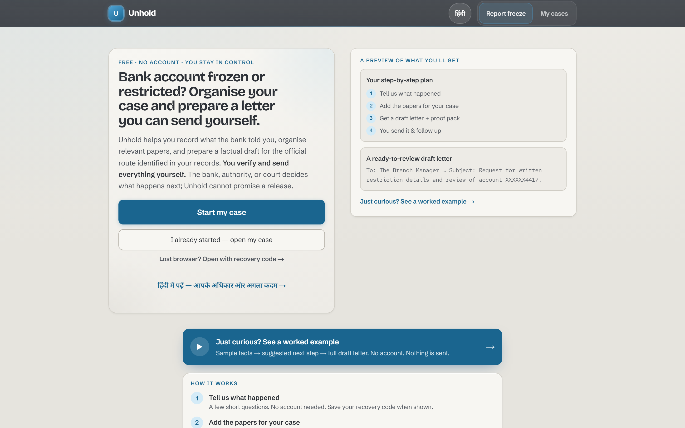
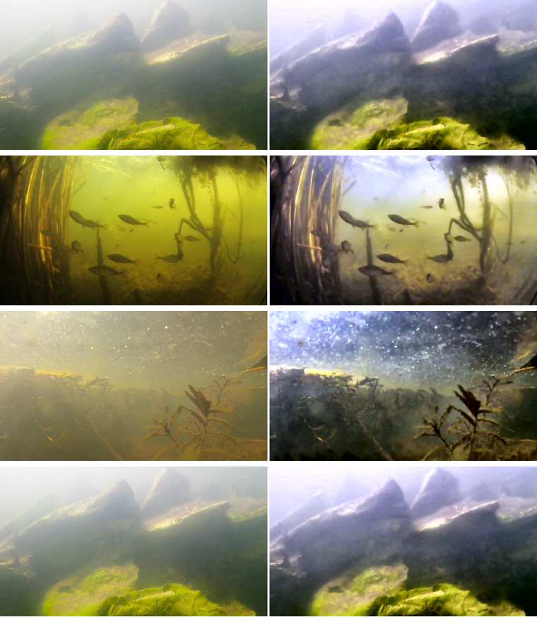

Engineer / Builder
I'm Thribhuvan. I build full-stack products and contribute focused fixes to open source.
My current work includes Tray, Unhold, TabMind, and AquaVision, alongside merged contributions across developer tools I use.


TabMind
Local-first Chrome extension that turns browsing sessions into summaries and tasks.
Built around local storage, session recovery, and a calmer way to resume research.

About Me
I build practical web products and contribute fixes upstream.
My work spans multi-tenant SaaS, AI-assisted workflows, browser tools, and image restoration.
Open Source
Focused fixes, merged upstream.
Contributions across compiler behavior, generated types, cookies, storage errors, and developer tooling. Each item links to the merged PR.
Work & Skills
Products I'm building and tools I work with.
Open the Work & Skills app from the dock for the full panel.
Selected Work
Products I'm building and tools I work with.
Four public projects, supported by hands-on open-source contributions.
Projects
Open Source
Merged contributions across these projects:
Tools I Use
{{ g.label }}
- {{ t }}
Open Source
Focused fixes, merged upstream.
Contributions across compiler behavior, generated types, cookies, storage errors, and developer tooling. Each item links to the merged PR.
Photos
A small visual archive.
Portraits, product captures, and personal photographs.
Music
A quiet corner for music I return to while working.
Spotify listening will appear here once it is connected.
Contact
Have something thoughtful to build or fix?
Email is the clearest way to reach me. GitHub and LinkedIn are here for more context.